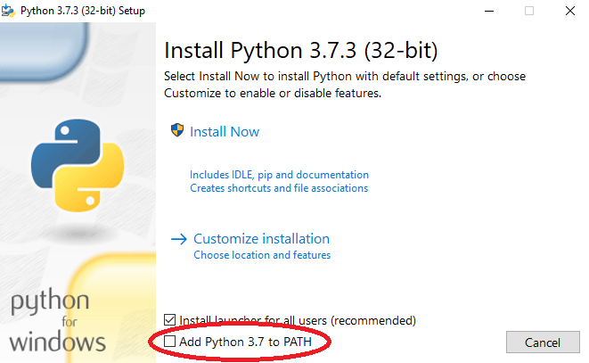

Let's start your introduction to Python by making sure you have installed it correctly.
Windows store
If you're running Windows 10 you can install Python via the windows store, which will automatically update your Python to the most current version. You don't have to do this, it's not what I've done personally, but it's worth checking out.
Installer from python.org
Make sure you have the latest version of the installer:
I'm personally running version 3.7.3, but any version after 3.6 as far as I'm aware will work for what I'll be doing, but to be on the safe side, try to make sure you're on the latest version.
Other software to check out
Editors
Now that you have Python installed and in your systems PATH environment variable (The windows store version does this, don't worry). We can begin. Feel free to use whatever editor you prefer, it doesn't really matter. If don't know which one to use for Python, here is a list of popular editors:
There's more than this out there, but these are all good. And at this point it doesn't really matter, the default editor will work fine.
Formatters and linters
If you have other people working on your code with you, or if you end up taking an extended break from your code, having it be readable and easier to understand is a godsend.
Programming is about expressing your creative thought into logic that can be understood by a computer, it's why I personally find it so fun. So don't worry if you're not using any of this. Try to remember that, it's supposed to be fun.
When you go to install it make sure you check the box that adds Python to PATH. It's on one of the first slides at the bottom of the installer and is usually unchecked by default.

This is important as it means you can run Python scripts, access the Python shell, and most importantly for later it'll mean you can use pip from the command prompt.
What is Python
Python may be different to languages that you have used before or will use in the future. Python is an interpreted high level language. What that means is, Python will talk to your computer and convert the code you've written into instructions that it can understand one line at a time.
That's what an interpreter does, a compiler on the other hand will convert the entire program to instructions that the computer can understand in one go. They both have their advantages, but generally compilers are faster than interpreters, but I wouldn't worry about that, Python is relevant and widely appreciated by programmers worldwide despite that.
Continuing the explanation, to be high level as a programming language, the language is far less complex and thus easier for humans to understand, sacrificing performance and control in return for an easier programming experience.
Because the logic behind programs is generally the same despite this, you still have to think the same way when programming in a lower level language like rust or c++ as you do when you program in Python, but an advantage of it is you can implement your creative ideas quickly and easily.
Here's a good video that explains the concept well, better than I ever could, even if it is a little dated:
The Python shell
One of the advantages of Python being an interpreted language is that you can write code and get instant feedback. A way to do this is by using the Python shell, to open it you can open the default Python IDLE, or type "py" into cmd or powershell. (If this doesn't work try "Python" or "Python3", if you can't get it to work at all, make sure Python is in your PATH)
A good way to get an understanding of how the interpreter works is to use the shell, think of every line in your code as another line typed out into the shell. One by one.
For the first few topics, I will be using the Python in "interactive mode", which is just a fancy way to say that I'll be using the Python shell to demonstrate them.